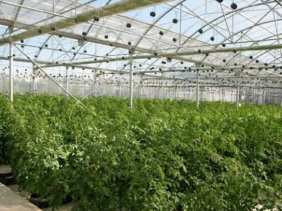

Generalmente, la época adecuada para plantar tomates en tu invernadero es el otoño o al inicio de la primavera en función de si buscas obtener un rendimiento tardío o inicial. También es habitual, por su productividad, hacer una rotación de dos cultivos sembrando uno para cultivar en otoño y otro en primavera.permanecen frescos y jugosos porque su piel es fina pero resistente y evita que el agua del tomate se evapore al tiempo que evita que se pudra.
¿Cómo son las cosechas en la época de otoño?
Las cosechas de otoño, y también de invierno, son variadas, y más abundantes de lo que puede parecer por el frío que está por llegar. Muchos de los vegetales son de crecimiento rápido, por lo que la cosecha aprovecha los tiempos. Otros están especialmente adaptados al frío.
